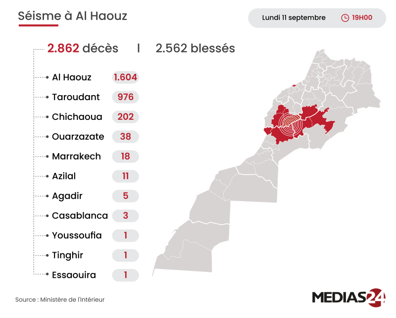

Séisme d'Al Haouz : 2.862 morts et 2.562 blessés (bilan actualisé du ministère de l'Intérieur)
Séisme d'Al Haouz : 2.862 morts et 2.562 blessés (bilan actualisé du ministère de l'Intérieur) Rabat - Un bilan actualisé du séisme qui a secoué certaines provinces et préfectures du Royaume le 8 septembre, fait état de 2.862 morts et de 2.562 blessés jusqu'à 19H00 de ce lundi, indique le ministère de l'Intérieur dans un communiqué. Un fort séisme de magnitude 6,8 a frappé le centre du Maroc, tuant plus de 2 000 personnes, a indiqué le ministère de l'Intérieur du pays. L'épicentre se trouvait dans les montagnes du Haut Atlas, à 71 km au sud-ouest de Marrakech, à une profondeur de 18,5 km, a indiqué l'US Geological Survey. Le séisme a eu lieu vendredi à 23h11 heure locale (22h11 temps universel). Il y a eu une réplique de 4,9 19 minutes plus tard. Des personnes sont mortes à Marrakech et dans plusieurs régions du sud, a indiqué le ministère. La plupart des victimes se trouveraient dans des régions reculées. Le ministère de l'Intérieur a déclaré que le séisme a tué des personnes dans les provinces et municipalités d'Al-Haouz, Marrakech, Ouarzazate, Azilal, Chichaoua et Taroudant, ajoutant qu'au moins 1 400 personnes ont été grièvement blessées. Des vidéos non vérifiés diffusés sur les réseaux sociaux montrent des bâtiments endommagés, d’autres bâtiments tremblants et des rues jonchées de décombres. On voit des gens fuir alarmés et certains marcher à travers des nuages de poussière.